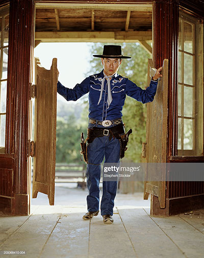

Being early for events is respectful, smart, and very reasonable.

Being early for events is important because it provides a buffer time, it allows you to be prepared for the event, and it helps the people who are organizing the event when everyone doesn’t show up right when it starts at the same time. Being early is a way to make sure you’re not late, it also shows respect to the people by being ready when they are. I think that being early for occasions is a really good way to provide buffer time and also gives respect people. I always am early for events and occasions because I don’t want to be late if traffic is bad, if it takes me longer to leave, if I can’t find the place, and if I arrive early, I am ready whenever other people are ready. Being late not only shows disrespect because you didn’t come when expected but also depending on the event makes the people wait around. Why should the people at the event wait, when instead you can wait for a bit less time than they would be and be ready when they are? Being exactly on time is somewhat reasonable but how can you be certain that nothing is going to go wrong and you’re going to be exactly on time. There are so many variables in which you could be later than expected so planning to be exactly on time is an unnecessary risk. Being early for events is a great idea because it provides a buffer, is respectful, and is the smartest option.
- Nathan Grift
The Late Escape

Do you know what the worst feeling in the world is? Waiting. We’ve all been there, the “hour long wait in the reception room”, the “where’s our food at? It should have been here like 15 minutes ago?.” It sucks, you feel helpless as your doomed to just twiddle your thumbs until whatever you’re waiting for happens. So my question is this: why would you intentionally put yourself in a position where you have to wait on others? That is exactly what people who chose to be early (also known as a “morning person”) are doing. It makes absolutely no sense to me, why would you want to intentionally leave the comfort of your own home just to sit/stand around on your phone for half an hour? In my eyes, the closer you can get to being exactly on time, the better. Some people may argue that its poor form or manners to arrive just as something starts, but surely if you’re supposed to be there at 9:00, getting there at 9:00:30 shows excellent time management skills? I'd even go as far as saying it’s beneficial to be late it certain situations, especially social. For example, I always like to show up “fashionably late” to birthday parties. Why? Because they don’t bring out the food until most people have arrived. The person who came early, has been sitting for almost an hour now, has had to put up with a bunch of boring introductions and is probably starving. Me? I just showed up, greeted by a piece of pizza and a slice of cake, the party is well underway so I just go find my established group of friends and hang with them. So my final point is this, who would you rather be?
-Nathan Jennex